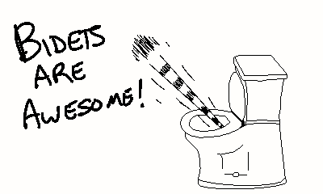
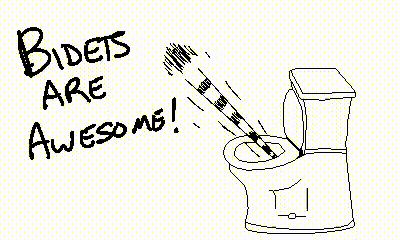
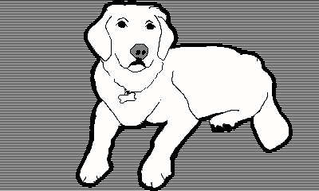
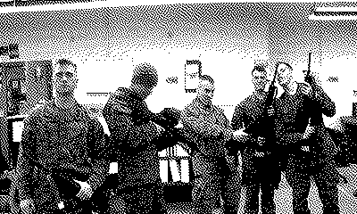

The changes I discussed in the last devlog have been taking a bit to implement, and I keep getting myself into trouble with self-inflicted bugs. I did a little bit of drawing this morning though and thought about writing my current process for creating puzzles. Or, one of my processes.
I boot up Procreate on my iPad with an Apple Pencil. It’s an older model iPad Pro 9.7 inch, released in 2016. It struggles at times, but it gets the job done. Procreate is not really made for pixel art, but when turning off Apple Pencil’s pressure settings and use a 1px brush, it works pretty well.

An added benefit of Procreate are these cool timelapses:

After drawing up these poor excuses of art and pixel art, I send it over to my laptop, where I paste it into an Aseprite file.
I have a collection of scripts that rip through Aseprite files, exporting PNGs and parsing both to transform them into the raw C-structs that I am looking for. These are then included directly into the sourcecode.
I mention this is one of my processes. Another of the processes is me taking photos, then tracing them in Procreate. I then do the same process as above to get them into the game.

The third process is taking photos and pumping them through niftyutils, a site to take photos and transform them to 1 bit.

I’m not entirely sold on this process just yet. I’m really trying to lean into the hand-crafted and human-side of this project. I think it helps this project separate itself from other projects in today’s gen-AI world. I feel like “take photo and run it through an algorithm” may lean away from that, not sure of that though, it’s just a thought.